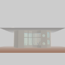
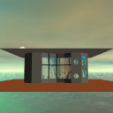
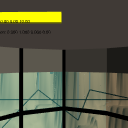
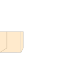
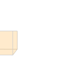
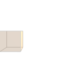
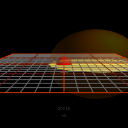
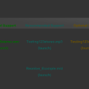
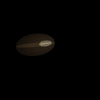
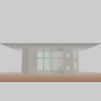

|
|
|
|
|
|
|
|
| 15 X3D Models | X3D Model Descriptions | |
|---|---|---|
|  | Collision Kelp Forest Main | Disabled collision with all objects with a Collision node in the Kelp Forest world. |
| Load Sensor Example | Simple test of LoadSensor node | |
|  | Load Sensor Kelp Forest Main | An example use of the LoadSensor node in the Kelp Forest world. |
| Load Sensor Kelp Forest Main time Out | An example use of the LoadSensor node in the Kelp Forest world. | |
|  | Proximity Sensor Example | Demonstrates use of a ProximitySensor in building a HUD |
| Proximity Sensor Kelp Forest Main | This example uses a ProximitySensor node to position a heads-up display (HUD) in the Kelp Forest world. | |
|  | Proximity Sensor Multiple | Example multiple ProximitySensor non-overlapping regions |
|  | Proximity Sensor No Overlap | Example ProximitySensor regions |
|  | Proximity Sensor Overlap | Example multiply-instanced ProximitySensor with overlapping regions |
| Proximity Sensor Single | Example of a single ProximitySensor region | |
|  | Sound Audio Clip | An example of the Sound and AudioClip node showing the effect of the various volume regions |
|  | Sound File Formats | Provide a test scene for sound files using various audio formats. |
| Sound Load Sensor Test | UsingLoadSensor to test when AudioClip loading is complete | |
|  | Sound Visualization | An example of the Sound node for testing X3D-Edit author-assist visualization |
|  | Visibility Sensor Kelp Forest Main | VisibilitySensor example. |
|
Online at https://X3dGraphics.com/examples/X3dForWebAuthors/Chapter12EnvironmentSensorSound
Master source-code model archive is under subversion control at |
The X3D Resources: Examples page and Savage Developers Guide provide more information about the production of this archive.
|
|
|
|
|
|
|